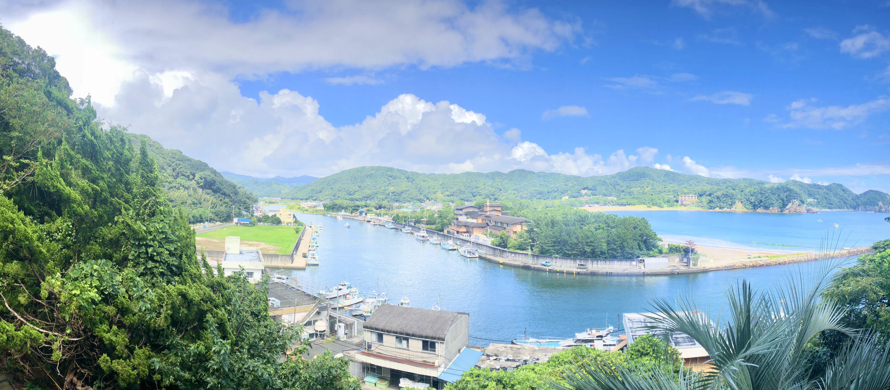
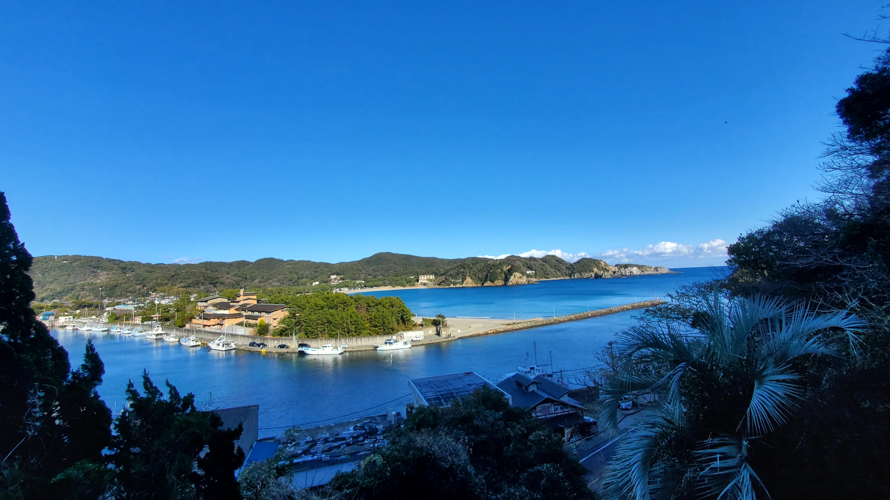
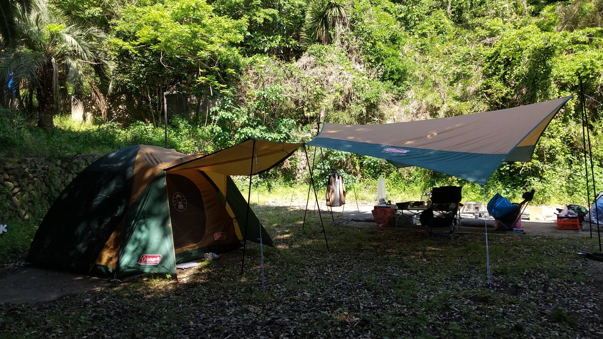
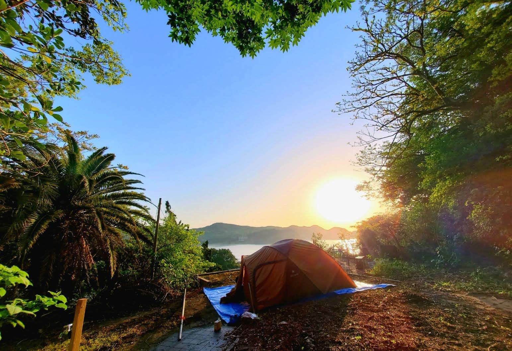
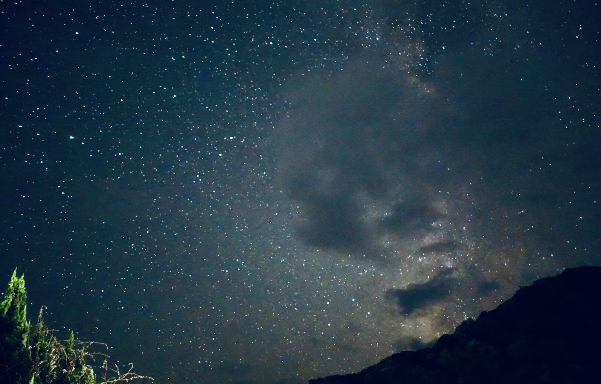
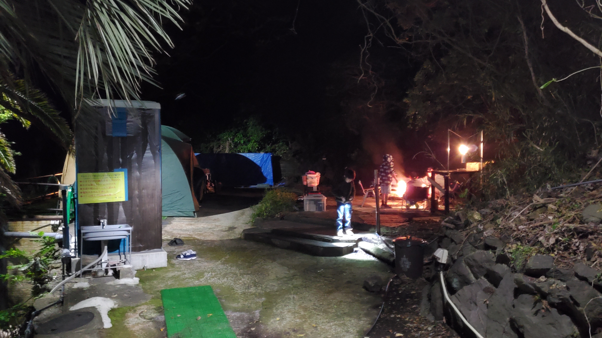
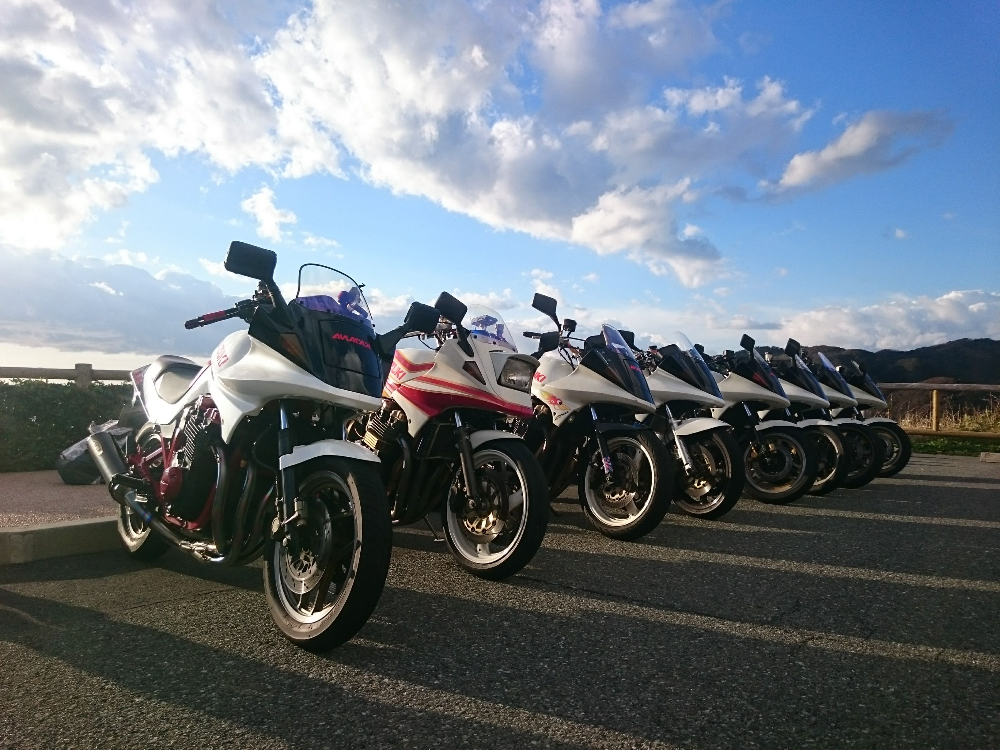
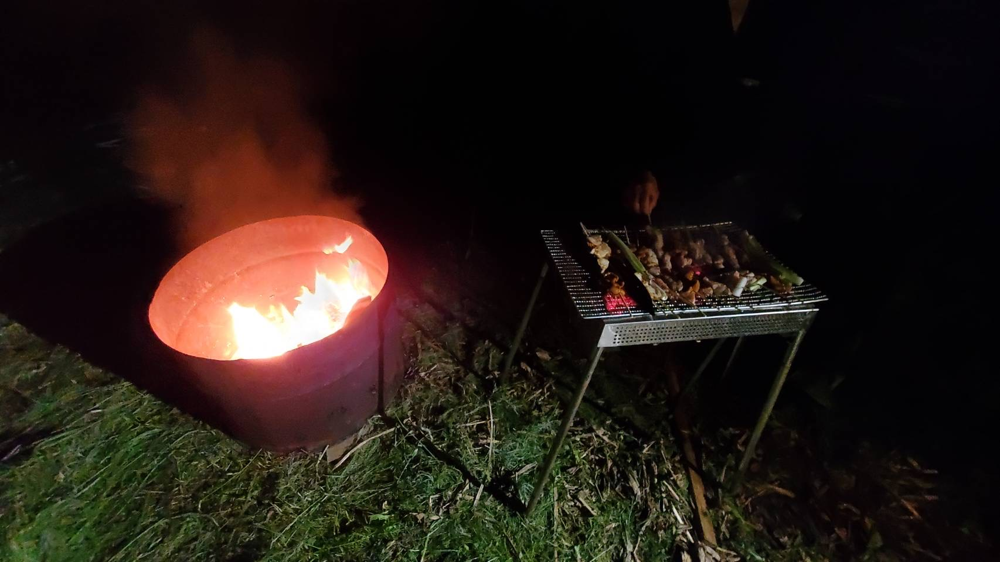
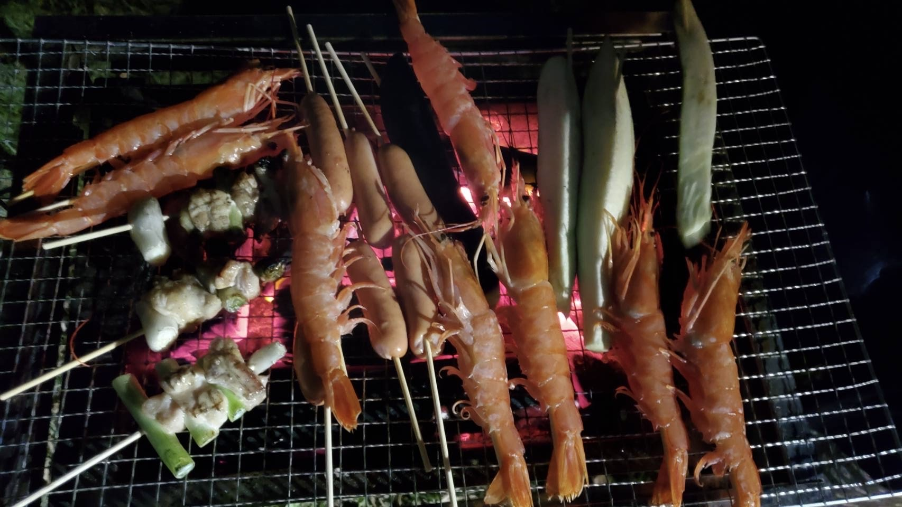

静岡県南伊豆町・手石にある、
弓ヶ浜を一望できる高台のキャンプ場です。
山の上にある静かなキャンプ場のため、
サイトまでは約100段の階段があります。
少しだけ不便ですが、
登った先には弓ヶ浜を見渡す景色と、
静かな時間が待っています。
波の音で目覚め、
夜は満天の星空を見ながら焚き火を楽しむ。
都会の喧騒を離れ、
ゆっくりと時間が流れる場所です。
高台から見渡す美しい海と白い砂浜
光害が少なく、夜は満天の星空・朝は美しい日の出
ペット無料で大切な家族と一緒に
各サイトに電気・水道完備 / トイレあり









※料金は1泊あたり（税込）です。
最新情報はお電話でご確認ください。
3,500円
お一人様
7,000円
2名利用まで
追加人数：1人 1,500円
・小学生以下無料
・ペット無料
・駐車場無料（3台まで）
ご予約・お問い合わせはお電話でお願いいたします。
住所：
〒415-0153 静岡県賀茂郡南伊豆町手石1212-1
電話：
090-6156-7424